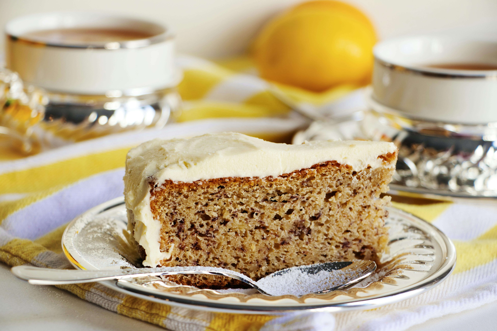
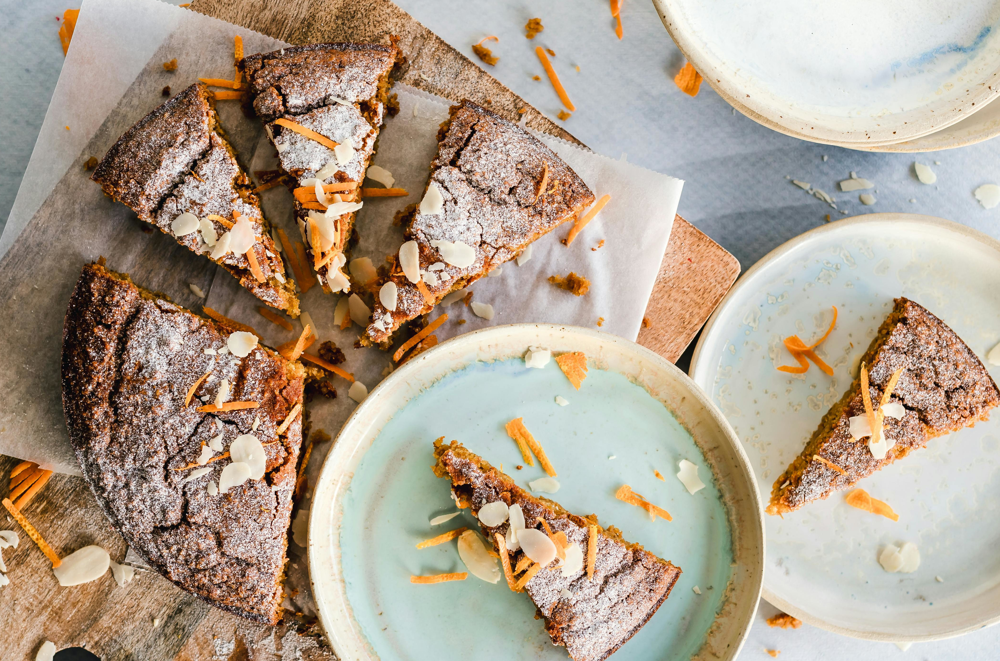
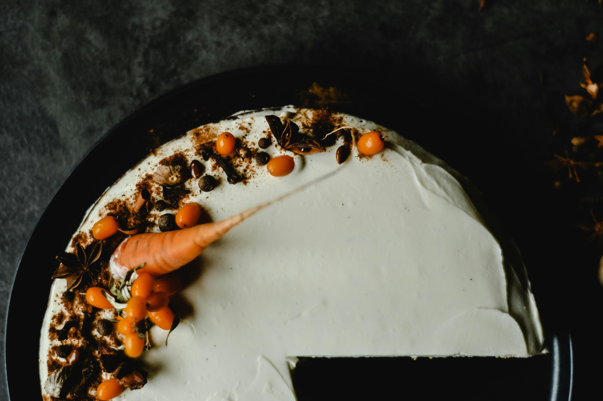
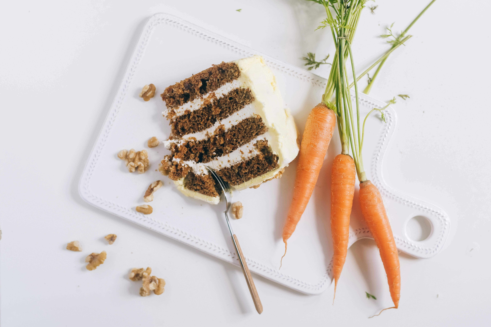
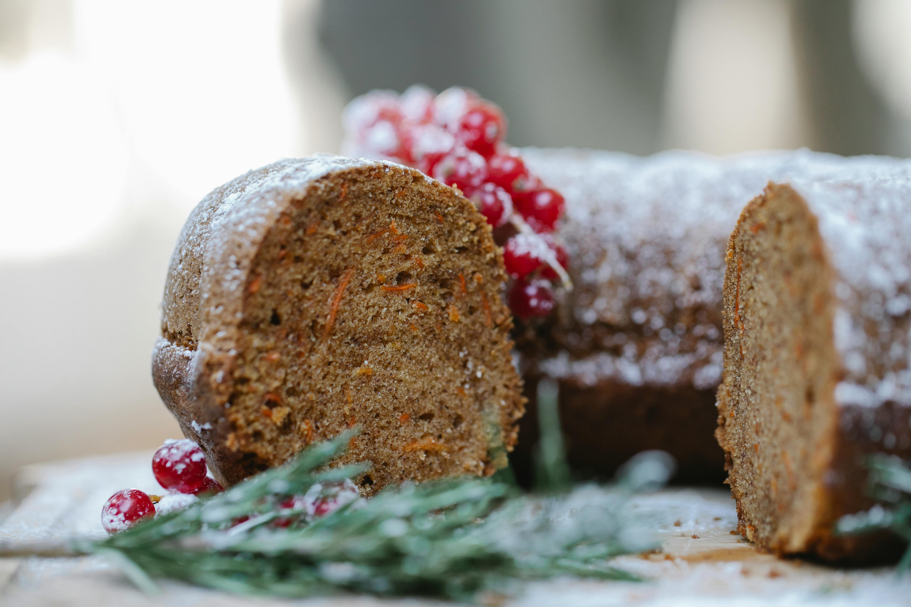

Mejores Chefs



Sugar cakes
El local Sugar cakes es un referente para amantes de los postres tradicionales.
Dolç racó
Un lugar con encanto y con muchas especialidades en dulces para ofrecer.
Delirium
Su dueño Richard, es conocido en Castelldefels por sus participaciones con grandes chefs.



Colourfoul corner
Este colorido local lleva abierto un año y aportará toda sus ganas en su primer concurso.
Marias's cakes
Maria dará a conocer su nueva creación el pastel de zanahoria con frutos secos en una masa bastante fina.
Pateleria Carlos
Esta pequeña pero conocida pasteleria obtuvo el premio al mejor pastel de manzana em España en 2018.